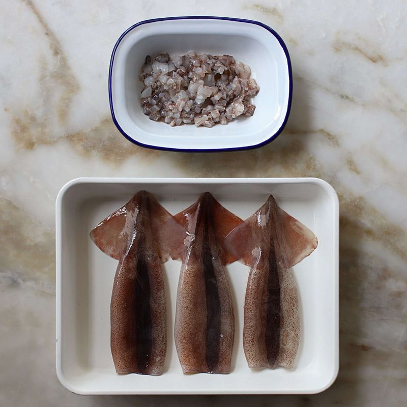
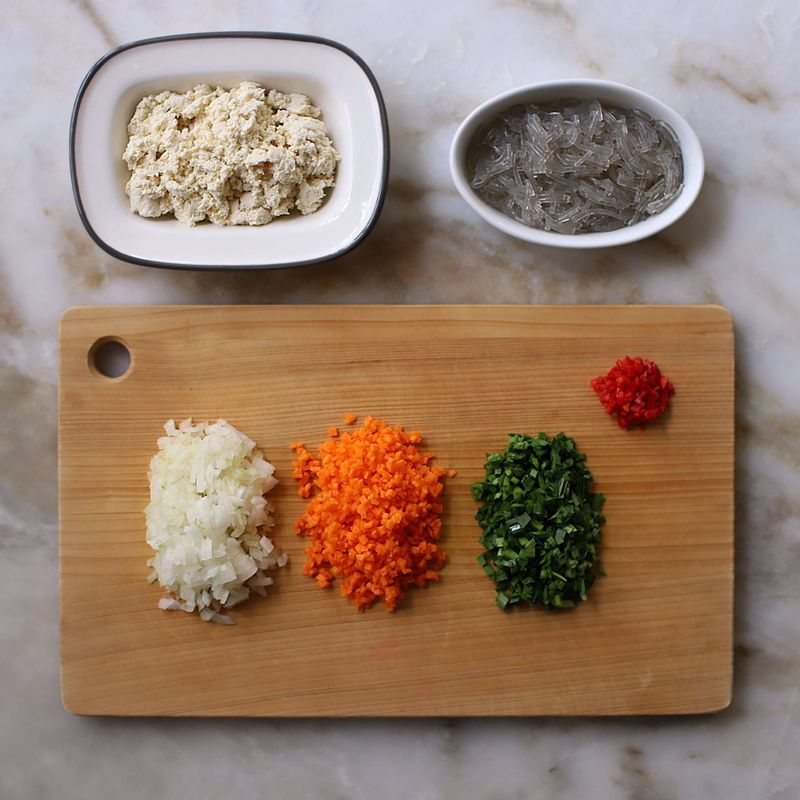
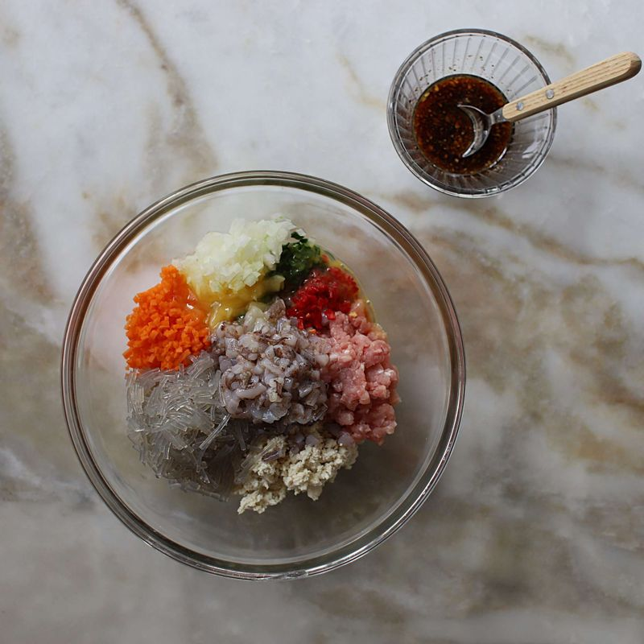
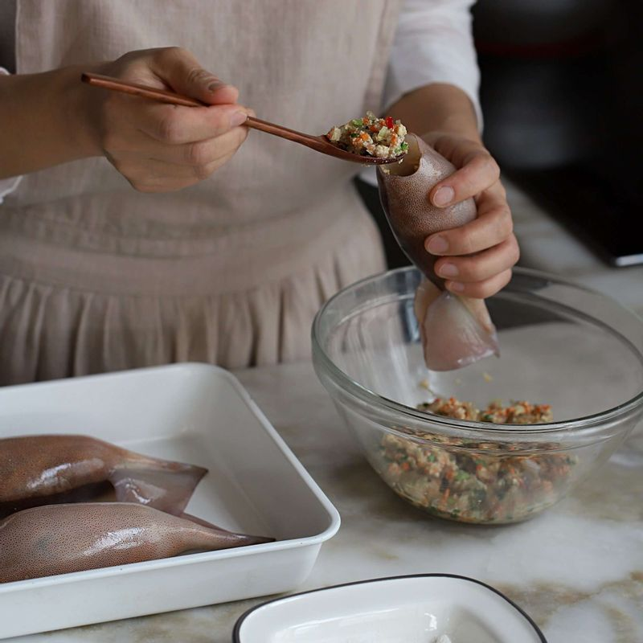
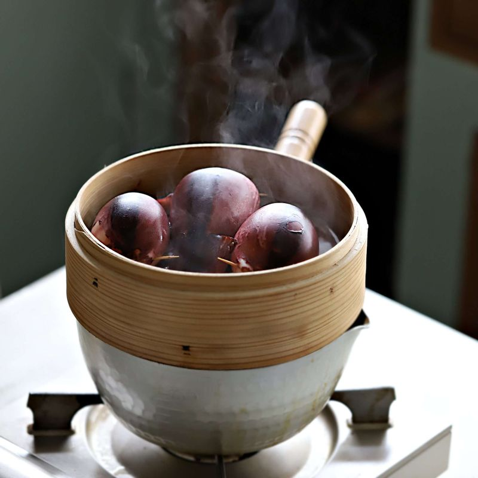
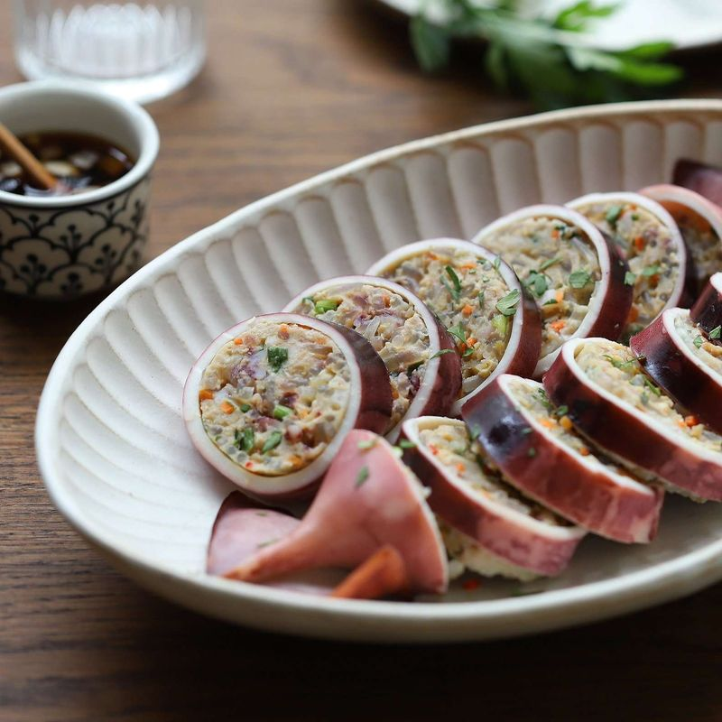
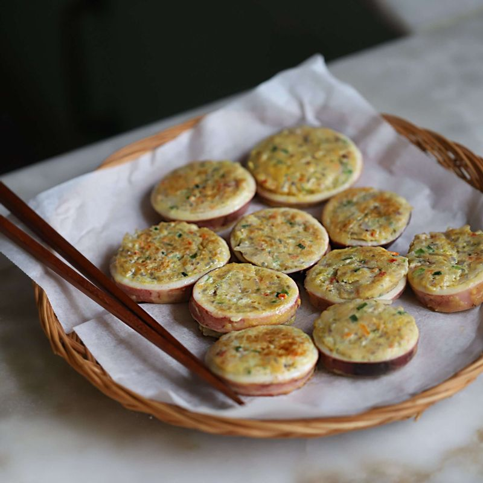

-

오징어는 배를 가르지 않고 다리를 당겨 내장을 꺼내어 속을 깨끗이 씻어주세요. 오징어 다리는 잘게 다져 물기를 제거해주세요.
-

양파와 당근, 홍고추, 부추는 잘게 다져 물기를 제거하고 두부는 으깨어 면포에 넣어 물기를 짜주세요. 불린 당면은 끓는 물에 넣고 3분 정도 데친 후 잘게 다져주세요.
-

볼에 다진 돼지고기, 다진채소, 당면, 오징어 다리, 달걀물 1/2개분, 전분가루, 소 양념재료를 넣고 고루 섞으며 치대어 순대 소를 만들어주세요.
-

오징어는 몸통 안쪽의 물기를 제거하고, 밀가루를 묻힌 후 털어내어 소를 4/5정도 채워 넣고 꼬치로 입구를 꿰어 고정시켜주세요.
(오징어 몸통을 3~4번 꼬치로 찔러 숨구멍을 만들면 오징어순대가 터지지 않고 소와 몸통이 분리되지 않게 만들 수 있어요)
-

김이 오른 찜통에 속을 채운 오징어를 넣어 15분 정도 쪄서 익혀주세요.
-

오징어순대가 한 김 식으면 먹기 좋게 썰고, 초간장(또는 초고추장)을 곁들여 주세요.
-

기호에 따라 남은 오징어순대에 밀가루를 묻히고 달걀물을 입혀 노릇하게 지져 드셔도 맛있어요.